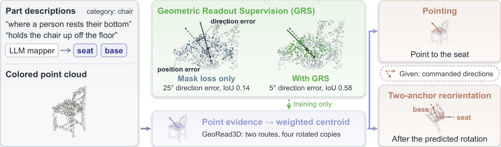
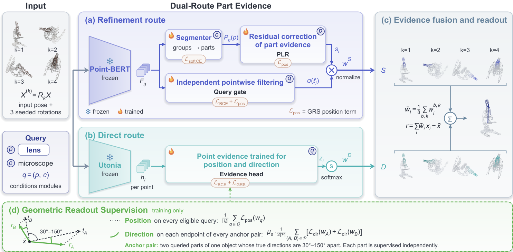
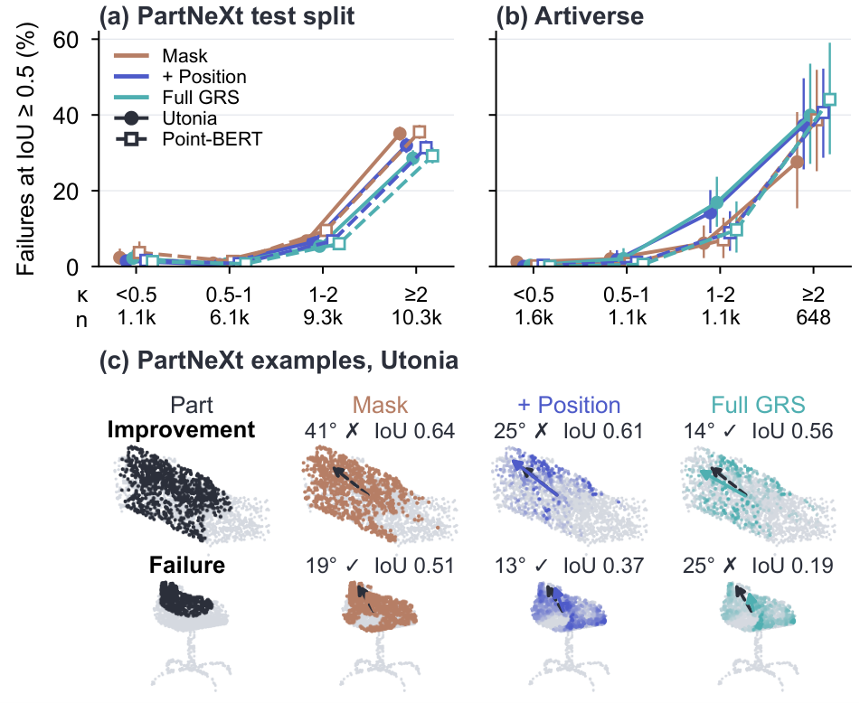

Learning part evidence for pointing and reorientation with GRS. A language model maps each part description to a known part name. The weighted centroid of the point evidence, relative to the object center, gives each part's direction for both tasks: pointing to a part, and two-anchor reorientation, which turns the object so that two named parts lie in commanded directions. During training, Geometric Readout Supervision (GRS) supervises the centroid's position and direction. In the matched heads on frozen Utonia features shown here, the evidence trained with GRS covers the part more accurately and its centroid points closer to the true direction than with the mask loss alone (25° → 5°). Dashed arrows show true or commanded directions and solid arrows predicted ones; white circles mark true part centers and dark dots the weighted centroids.
Language often refers to an object by its parts, as in asking to point to a part or to turn an arbitrarily posed object so that two named parts lie in given directions. Both tasks need the direction from the object's center to the part's center, not the part's own orientation. A natural approach segments the part and takes the centroid of its mask. However, high mask overlap predicts the pointing direction poorly when a part is spread out relative to its distance from the object center. Language-guided part segmentation is trained and evaluated by mask overlap, which leaves a gap between the masks it produces and the part geometry that these tasks use.
We close this gap by learning point evidence, weights over the observed points whose weighted centroid gives the part's location. Geometric Readout Supervision (GRS) trains these weights through the centroid's position and adds direction supervision on the parts used in reorientation commands. GRS improves both tasks even with a single frozen encoder and a single input pose. We implement this supervision in GeoRead3D, a system for pointing and reorientation from part descriptions. A language model maps each description to a known part name. Dual-Route Part Evidence combines refined segmentation evidence with directly predicted point evidence to locate each part.
On PartNeXt and Artiverse, GeoRead3D points within 22.5° for 74.1% and 60.0% of queries, 5.8 and 7.3 percentage points above the strongest baselines. Its reorientation success exceeds the strongest baselines by 10.4 and 7.8 points.
Pointing and two-anchor reorientation both use the direction from the object's center to the part's center. A few misplaced points can shift a mask's centroid even when its overlap with the part is high. GeoRead3D instead predicts point evidence — query-conditioned weights over the input points — and reads out the part's location as their weighted centroid.
GRS trains the evidence through its readout: a position term on the centroid of every queried part, and a direction term on the parts that can anchor a reorientation command. With one frozen encoder and one input pose, it raises pointing by 5.1–7.0 points and reorientation by 4.8–12.7 points over mask supervision alone.
A refinement route corrects a frozen Point-BERT segmenter's evidence with a Part Localization Refiner (PLR) and a query gate; a direct route predicts evidence from frozen Utonia features. Both weight the same input points, so their evidence is averaged across routes and four rotated copies of the input before a single readout per part.

Dual-Route Part Evidence with GRS. (a) Refinement route. A segmenter on frozen Point-BERT features predicts group evidence; the Part Localization Refiner (PLR) corrects it for localization and a query gate filters points. (b) Direct route. An evidence head predicts point evidence from frozen Utonia features. (c) Evidence fusion and readout. Evidence from both routes and four rotated copies of the input (the input pose plus three seeded rotations) is averaged per point and read out once. (d) Geometric Readout Supervision. During training, GRS supervises position on every queried part and direction on both parts of each anchor pair — two queried parts of one object whose true directions are 30°–150° apart. Heatmaps show evidence for the lens of a held-out 3DCoMPaT microscope.
| Method | Variant | PartNeXt test split | Artiverse | Params | Time (ms) | ||||||
|---|---|---|---|---|---|---|---|---|---|---|---|
| Point. ↑ | Reorient. ↑ | Whole ↑ | Severe ↓ | Point. ↑ | Reorient. ↑ | Whole ↑ | Severe ↓ | ||||
| COPS (WACV'25) | Released | 18.5 | 6.4 | 5.7 | 50.8 | 14.8 | 3.7 | 3.2 | 54.7 | 236.2M | 712 |
| Find3D (ICCV'25) | Released | 38.4 | 26.0 | 23.0 | 23.0 | 26.5 | 13.3 | 11.1 | 33.7 | 46.2M | 282 |
| CoSMo3D (CVPR'26) | Released | 41.8 | 27.7 | 23.6 | 19.6 | 37.2 | 16.6 | 14.1 | 26.3 | 57.5M | 251 |
| PatchAlign3D (CVPR'26) | Released | 45.5 | 33.4 | 29.7 | 19.3 | 29.7 | 18.3 | 16.4 | 37.6 | 22.4M | 57 |
| Point-BERT (CVPR'22) | Frozen + mask head | 64.7 ±1.1 | 53.8 ±1.8 | 48.2 ±1.8 | 5.8 ±0.5 | 52.5 ±0.9 | 27.1 ±0.6 | 24.9 ±0.4 | 16.5 ±0.1 | 22.1M | 140 |
| Find3D (ICCV'25) | Frozen + mask head | 39.2 ±0.8 | 26.8 ±0.8 | 23.8 ±0.7 | 23.5 ±1.0 | 33.2 ±0.3 | 7.6 ±1.0 | 6.5 ±1.3 | 30.9 ±0.4 | 46.7M | 252 |
| PatchAlign3D (CVPR'26) | Frozen + mask head | 51.5 ±0.9 | 37.1 ±1.4 | 31.7 ±1.8 | 9.6 ±0.3 | 37.9 ±0.4 | 17.8 ±1.7 | 16.6 ±1.4 | 30.9 ±0.3 | 23.1M | 46 |
| Utonia (ICML'26) | Frozen + mask head | 68.4 ±1.0 | 60.8 ±1.6 | 54.0 ±1.3 | 4.2 ±0.2 | 51.0 ±0.8 | 25.0 ±1.4 | 23.2 ±1.1 | 18.4 ±0.6 | 138.0M | 147 |
| Point-BERT (CVPR'22) | Fine-tuned | 67.8 ±0.3 | 59.5 ±1.0 | 54.2 ±0.9 | 6.7 ±0.2 | 52.7 ±0.4 | 24.4 ±0.8 | 22.8 ±0.5 | 17.9 ±0.7 | 22.1M | 41 |
| PointNeXt-S (NeurIPS'22) | From scratch | 43.3 ±1.0 | 30.8 ±0.8 | 27.4 ±0.9 | 16.8 ±0.6 | 37.1 ±1.0 | 16.3 ±0.7 | 15.3 ±1.2 | 30.7 ±0.9 | 22.6M | 52 |
| PointLLM-7B (ECCV'24) | Fine-tuned | 53.6 ±1.2 | 40.8 ±1.5 | 36.6 ±1.5 | 10.2 ±0.8 | 49.1 ±1.0 | 20.7 ±1.4 | 18.1 ±0.7 | 18.0 ±1.3 | 6.78B | 483 |
| Utonia (ICML'26) | Fine-tuned | 63.6 ±1.7 | 55.8 ±2.6 | 50.6 ±2.4 | 7.6 ±0.6 | 44.1 ±1.4 | 21.3 ±1.7 | 19.8 ±1.8 | 23.8 ±0.8 | 137.6M | 159 |
| GeoRead3D (ours) | — | 74.1 ±0.4 | 71.2 ±0.3 | 65.3 ±0.4 | 3.0 ±0.1 | 60.0 ±0.8 | 34.9 ±2.7 | 32.2 ±2.3 | 12.7 ±0.8 | 160.6M | 307 |
Success and severe error rates in percent on rotated input, with a shared language-model mapper and four poses (one pose for COPS). Point.: pointing within 22.5°; Reorient.: both anchor parts within 30° of their commanded directions; Whole: whole-object rotation within 30°; Severe: pointing errors above 90°. Trained rows give the mean ± standard deviation over three seeds, and bold marks the best mean. Params counts the networks run at inference, excluding cached text embeddings and the shared mapper; Time is the median latency per object on one GPU. All trained modules and baselines use the 14,350 training shapes of 3DCoMPaT; the PartNeXt test split holds 4,496 chair and sofa shapes, and the Artiverse sample covers 1,708 shapes from 20 categories.
To separate the effect of the supervision from the dual-route system, the same frozen encoder and evidence head are trained with mask supervision alone or with full GRS, and evaluated on a single input pose with correct part names.
| Encoder (frozen + head) | Objective | PartNeXt test split | Artiverse | ||
|---|---|---|---|---|---|
| Point. ↑ | Reorient. ↑ | Point. ↑ | Reorient. ↑ | ||
| Utonia (ICML'26) | Mask | 62.7 ±0.8 | 52.1 ±0.7 | 47.9 ±0.4 | 20.8 ±1.0 |
| Full GRS | 67.8 ±0.4 | 61.2 ±0.8 | 54.7 ±0.5 | 25.6 ±0.6 | |
| Δ | +5.1 ±0.9 | +9.2 ±1.5 | +6.9 ±0.9 | +4.8 ±0.8 | |
| Point-BERT (CVPR'22) | Mask | 62.3 ±1.1 | 49.9 ±1.4 | 50.4 ±0.8 | 23.6 ±0.9 |
| Full GRS | 69.3 ±0.4 | 62.6 ±0.9 | 56.0 ±1.5 | 31.7 ±5.3 | |
| Δ | +7.0 ±0.9 | +12.7 ±0.5 | +5.6 ±2.2 | +8.1 ±5.6 | |
Success rates in percent on rotated input, mean ± standard deviation over three seeds. Every gain is significant (paired bootstrap, 95% interval excluding zero), without a second evidence route or aggregation over poses.
Parts are grouped by κ, the part's spread divided by its distance from the object center. Below κ = 1, nearly every mask with IoU ≥ 0.5 points correctly; from κ = 2 upward, a quarter to a half of them fail, for every head and both encoders on both datasets. High overlap does not ensure an accurate direction when a part is spread out relative to its offset from the center.

Mask overlap and pointing by part geometry. (a, b) Pointing failures among masks with IoU ≥ 0.5, grouped by κ, for heads on frozen encoders (input pose and correct part names, with 95% intervals and n queries per group). (c) Two examples chosen by a fixed rule, with true directions dashed and readouts solid. In the improvement example, direction supervision shifts weight toward the far end of a part the mask head already covers, so the readout turns toward the true direction despite lower IoU; in the failure example, the GRS evidence spreads onto a neighboring part and pulls the readout away.
@article{hou2026georead3d,
title = {GeoRead3D: Grounding Part Descriptions for 3D Pointing and Reorientation},
author = {Hou, Zhangcheng and Tonkich, Kevin and Ohtsuki, Tomoaki},
journal = {arXiv preprint arXiv:2611.30519},
year = {2026}
}